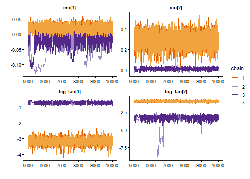
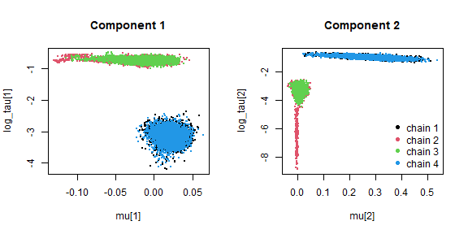

Addressing multimodal posteriors
Maximilian Maier
Source:vignettes/multimodality.Rmd
multimodality.RmdThe posterior distribution of a mixture model can have several modes. The component means in metamixr are ordered, which removes the label switching between components, but other possible sources of multimodility remain: for example, a data set may be described similarly well by a narrow component next to a broad one as by a broad component next to a narrow one. Chains that start from different values can then settle in different modes (resulting in extremely high Rhat values and poor convergence) Pooling draws of all chains gives parameter summaries and bridge-sampling marginal likelihoods that do not correspond to any single mode.
This vignette shows how to handle such a case, using the
two-component selection model of the nudging meta-analysis from
vignette("nudging"), which did not converge. The basic idea
is to refit the model within each mode, estimate the marginal likelihood
of each mode with bridge sampling, and if the data is clearly more
likely under one mode than the other one condition on the mode that
carries the posterior mass. Importantly conditioning on the mode that
carries the posterior mass should only be done if the data are
overwhelmingly more likely under one mode than the other one. In cases,
where two modes receive similar posterior probability this uncertainty
needs to be propagated for inference (e.g., by model averaging across
them or reporting and comparing both specifications in the main text of
the mansucript).
Reproducing the non-converged fit
The data are prepared exactly as in the nudging vignette.
data("mertens_nudge")
nudge <- subset(mertens_nudge, abs(cohens_d) < 1.5)
nudge <- nudge[!grepl("^Wansink", nudge$reference), ]
y <- nudge$cohens_d
sd <- sqrt(nudge$variance_d)
fit <- sel_mix(y, sd, M = 2, steps = c(0.5, 0.975),
chains = 4, cores = 4, iter = 10000, warmup = 5000,
seed = 1, refresh = 0)
#> Warning: There were 435 divergent transitions after warmup. See
#> https://mc-stan.org/misc/warnings.html#divergent-transitions-after-warmup
#> to find out why this is a problem and how to eliminate them.
#> Warning: Examine the pairs() plot to diagnose sampling problems
#> Warning: The largest R-hat is NA, indicating chains have not mixed.
#> Running the chains for more iterations may help. See
#> https://mc-stan.org/misc/warnings.html#r-hat
#> Warning: Bulk Effective Samples Size (ESS) is too low, indicating posterior means and medians may be unreliable.
#> Running the chains for more iterations may help. See
#> https://mc-stan.org/misc/warnings.html#bulk-ess
#> Warning: Tail Effective Samples Size (ESS) is too low, indicating posterior variances and tail quantiles may be unreliable.
#> Running the chains for more iterations may help. See
#> https://mc-stan.org/misc/warnings.html#tail-ess
print(fit, pars = c("mu", "tau", "theta", "omega"))
#> Inference for Stan model: selection_mix.
#> 4 chains, each with iter=10000; warmup=5000; thin=1;
#> post-warmup draws per chain=5000, total post-warmup draws=20000.
#>
#> mean se_mean sd 2.5% 25% 50% 75% 97.5% n_eff Rhat
#> mu[1] 0.00 0.02 0.04 -0.11 -0.02 0.01 0.02 0.04 4 1.45
#> mu[2] 0.15 0.10 0.15 -0.01 0.01 0.04 0.29 0.40 2 3.02
#> tau[1] 0.26 0.16 0.22 0.03 0.04 0.23 0.48 0.55 2 9.08
#> tau[2] 0.20 0.12 0.17 0.02 0.04 0.17 0.37 0.44 2 7.01
#> theta[1] 0.51 0.00 0.05 0.41 0.48 0.51 0.54 0.60 331 1.02
#> theta[2] 0.49 0.00 0.05 0.40 0.46 0.49 0.52 0.59 331 1.02
#> omega[1] 0.06 0.01 0.03 0.02 0.04 0.05 0.07 0.12 4 1.49
#> omega[2] 0.20 0.02 0.05 0.12 0.16 0.20 0.23 0.32 5 1.32
#> omega[3] 1.00 0.00 0.00 1.00 1.00 1.00 1.00 1.00 1590 1.00
#>
#> Samples were drawn using NUTS(diag_e) at Thu Sep 24 10:57:23 2026.
#> For each parameter, n_eff is a crude measure of effective sample size,
#> and Rhat is the potential scale reduction factor on split chains (at
#> convergence, Rhat=1).The R-hat values of the heterogeneity parameters are far above 1, and the trace plots show why: the chains do not disagree about a single posterior but sit in two different modes.

A scatter plot of each component’s mean against its log heterogeneity, coloured by chain, shows the two configurations directly. In one, the first component is a narrow spike at zero and the second a broad component with a positive mean; in the other, the first component is broad and the second is the spike.
draws <- as.array(fit) # iterations x chains x parameters
par(mfrow = c(1, 2))
for (m in 1:2) {
plot(NULL, xlim = range(draws[, , paste0("mu[", m, "]")]),
ylim = range(draws[, , paste0("log_tau[", m, "]")]),
xlab = paste0("mu[", m, "]"), ylab = paste0("log_tau[", m, "]"),
main = paste("Component", m))
for (ch in 1:4) {
points(draws[, ch, paste0("mu[", m, "]")], draws[, ch, paste0("log_tau[", m, "]")],
col = ch, pch = 16, cex = 0.3)
}
}
legend("bottomright", legend = paste("chain", 1:4), col = 1:4, pch = 16, bty = "n")
Locating the modes
The modes differ in the heterogeneity of the components, so the
chains can be grouped by their mean log_tau. Chains whose
mean log_tau values differ by less than 0.75 on every
component are assigned to the same mode.
chain_log_tau <- sapply(c("log_tau[1]", "log_tau[2]"), function(p) colMeans(draws[, , p]))
chain_log_tau
#> log_tau[1] log_tau[2]
#> chain:1 -3.1739098 -0.9915489
#> chain:2 -0.7206939 -3.6373016
#> chain:3 -0.7317560 -3.2952687
#> chain:4 -3.1709399 -0.9884801
basin <- cutree(hclust(dist(chain_log_tau, method = "maximum"), method = "complete"), h = 0.75)
basin
#> chain:1 chain:2 chain:3 chain:4
#> 1 2 2 1Refitting within each mode
Each mode is now fitted on its own by starting all chains inside it.
# Starting values for a refit inside one mode.
# draws: the posterior draws of the failed fit
# chains: the indices of the chains that sat in the mode
# n_chains: number of chains of the refit
# jitter: size of the random perturbation of the starting values
basin_inits <- function(draws, chains, n_chains = 4, jitter = 0.05) {
# centre of the mode: the median of each parameter over the chains that sat in it.
# Stan needs starting values for the underlying parameters of the model: the first
# mean mu1 and the gap to the second mean, tau, theta, and the
# simplex omega_raw whose cumulative sum gives the selection weights omega.
med <- function(p) median(draws[, chains, p])
centre <- list(
mu1 = med("mu1"),
mu_gap = med("mu_gap[1]"),
tau = c(med("tau[1]"), med("tau[2]")),
theta = c(med("theta[1]"), med("theta[2]")),
omega_raw = c(med("omega_raw[1]"), med("omega_raw[2]"), med("omega_raw[3]")))
# one slightly perturbed copy of the centre per chain, so that the chains do not
# start from identical points
lapply(seq_len(n_chains), function(i) {
# multiplicative jitter of about +/- 5%, which keeps positive quantities positive
j <- function(x) x * exp(rnorm(length(x), 0, jitter))
theta <- j(centre$theta)
omega_raw <- j(centre$omega_raw)
list(mu1 = centre$mu1 + rnorm(1, 0, 0.01), # mu1 can be negative: additive jitter
mu_gap = as.array(j(centre$mu_gap)), # as.array(): Stan expects a vector, even of length 1
tau = as.array(j(centre$tau)),
theta = as.array(theta / sum(theta)), # renormalise: theta is a simplex
omega_raw = as.array(omega_raw / sum(omega_raw))) # renormalise: omega_raw is a simplex
})
}
set.seed(1)
fits <- list()
for (b in sort(unique(basin))) {
fits[[paste0("mode", b)]] <- sel_mix(y, sd, M = 2, steps = c(0.5, 0.975),
init = basin_inits(draws, which(basin == b)),
chains = 4, cores = 4, iter = 10000, warmup = 5000,
seed = 1, refresh = 0)
}
#> Warning: There were 190 divergent transitions after warmup. See
#> https://mc-stan.org/misc/warnings.html#divergent-transitions-after-warmup
#> to find out why this is a problem and how to eliminate them.
#> Warning: Examine the pairs() plot to diagnose sampling problems
#> Warning: Tail Effective Samples Size (ESS) is too low, indicating posterior variances and tail quantiles may be unreliable.
#> Running the chains for more iterations may help. See
#> https://mc-stan.org/misc/warnings.html#tail-essBoth refits should now converge, and the chains should have stayed in the mode they were started in.
for (b in names(fits)) {
s <- rstan::summary(fits[[b]], pars = c("mu", "tau", "theta", "omega"))$summary
cat(b, ": max R-hat =", round(max(s[, "Rhat"], na.rm = TRUE), 3), "\n")
print(round(s[c("mu[1]", "mu[2]", "tau[1]", "tau[2]", "theta[1]", "theta[2]"), c("mean", "2.5%", "97.5%")], 3))
}
#> mode1 : max R-hat = 1.001
#> mean 2.5% 97.5%
#> mu[1] 0.021 -0.003 0.042
#> mu[2] 0.285 0.133 0.418
#> tau[1] 0.042 0.029 0.061
#> tau[2] 0.374 0.310 0.449
#> theta[1] 0.514 0.420 0.605
#> theta[2] 0.486 0.395 0.580
#> mode2 : max R-hat = 1.005
#> mean 2.5% 97.5%
#> mu[1] -0.018 -0.082 0.022
#> mu[2] 0.010 -0.012 0.031
#> tau[1] 0.479 0.421 0.546
#> tau[2] 0.037 0.017 0.055
#> theta[1] 0.497 0.407 0.595
#> theta[2] 0.503 0.405 0.593Weighing the modes
We next estimate the probability of the data under each mode using bridgesampling.
logml <- sapply(fits, function(f) bridge_sampler(f, silent = TRUE)$logml)
lp_max <- sapply(fits, function(f) max(rstan::extract(f, pars = "lp__")$lp__))
posterior_prob <- exp(logml - max(logml)) / sum(exp(logml - max(logml)))
round(cbind(logml = logml, posterior_prob = posterior_prob, lp_max = lp_max), 3)
#> logml posterior_prob lp_max
#> mode1 -80.203 0.999 -70.715
#> mode2 -87.513 0.001 -79.201The mode with the narrow null component and the broad positive component carries essentially all of the posterior mass. We therefore use this mode for substantive interpretation of the model and when comparing with other models.
dominant <- fits[[which.max(posterior_prob)]]
print(dominant, pars = c("mu", "tau", "theta", "theta_preselection", "omega"))
#> Inference for Stan model: selection_mix.
#> 4 chains, each with iter=10000; warmup=5000; thin=1;
#> post-warmup draws per chain=5000, total post-warmup draws=20000.
#>
#> mean se_mean sd 2.5% 25% 50% 75% 97.5% n_eff Rhat
#> mu[1] 0.02 0 0.01 0.00 0.01 0.02 0.03 0.04 12159 1
#> mu[2] 0.29 0 0.07 0.13 0.24 0.29 0.34 0.42 9194 1
#> tau[1] 0.04 0 0.01 0.03 0.04 0.04 0.05 0.06 15984 1
#> tau[2] 0.37 0 0.04 0.31 0.35 0.37 0.40 0.45 10705 1
#> theta[1] 0.51 0 0.05 0.42 0.48 0.51 0.55 0.61 15731 1
#> theta[2] 0.49 0 0.05 0.39 0.45 0.49 0.52 0.58 15731 1
#> theta_preselection[1] 0.71 0 0.05 0.60 0.68 0.72 0.75 0.81 14215 1
#> theta_preselection[2] 0.29 0 0.05 0.19 0.25 0.28 0.32 0.40 14215 1
#> omega[1] 0.08 0 0.03 0.04 0.06 0.08 0.09 0.14 10618 1
#> omega[2] 0.24 0 0.05 0.15 0.20 0.23 0.27 0.35 13487 1
#> omega[3] 1.00 0 0.00 1.00 1.00 1.00 1.00 1.00 282 1
#>
#> Samples were drawn using NUTS(diag_e) at Thu Sep 24 11:11:25 2026.
#> For each parameter, n_eff is a crude measure of effective sample size,
#> and Rhat is the potential scale reduction factor on split chains (at
#> convergence, Rhat=1).Comparison to Other Nudge Mixtures
Finally, we can test whether the model comparison in
vignette("nudging") is robust when the two-component
selection model is represented by the converged fit initialised in the
mode that carries almost all posterior probability. The log marginal
likelihoods of the other models are taken from the model comparison
table of that vignette.
logml_nudging <- c("sel_mix M=1" = -132.626, "sel_mix M=2" = -85.358,
"sel_mix M=3" = -75.471, "sel_mix M=4" = -75.628,
"re_mix M=1" = -154.892, "re_mix M=2" = -115.559,
"re_mix M=3" = -105.789, "re_mix M=4" = -107.965)
logml_nudging["sel_mix M=2"] <- logml[which.max(posterior_prob)] # dominant mode instead of pooled chains
post_prob <- exp(logml_nudging - max(logml_nudging)) / sum(exp(logml_nudging - max(logml_nudging)))
round(cbind(logml = logml_nudging, post_prob = post_prob), 3)
#> logml post_prob
#> sel_mix M=1 -132.626 0.000
#> sel_mix M=2 -80.203 0.005
#> sel_mix M=3 -75.471 0.537
#> sel_mix M=4 -75.628 0.459
#> re_mix M=1 -154.892 0.000
#> re_mix M=2 -115.559 0.000
#> re_mix M=3 -105.789 0.000
#> re_mix M=4 -107.965 0.000We can see that the results are unchanged, with most of the posterior probability still split between the three- and four-component selection models.
Final Remarks
- Four chains can all be attracted to the same mode, in which case R-hat looks fine and the multimodality goes unnoticed. For a publication ready model it is therefore worth running many chains from deliberately dispersed starting values (for example, heterogeneities drawn log-uniformly between 0.005 and 1) and applying the same procedure to the modes found.
- The inference should only be conditioned on a single mode if one mode clearly carries most of the posterior mass!
References
Maier, M. (2026). Addressing heterogeneity with Bayesian meta-analytic mixture modelling. PsyArXiv. https://doi.org/10.31234/osf.io/nkyqm_v2